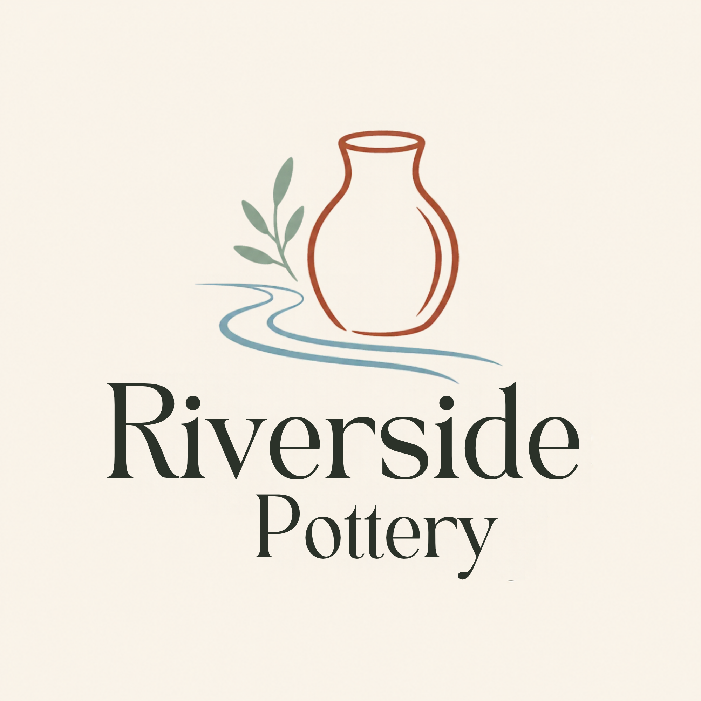

Saturdays
10:00 a.m.–2:00 p.m.
November 1–December 15, 2026

Workshop schedule ↗We’re Riverside Pottery, a small neighbourhood studio selling handmade pottery and offering pottery classes and workshops.
Find your weekend sessionA little time.
Something you made.
Busy week? Our one-off workshops give you time to try pottery and complete a project in a single session.
New to clay? You don’t need any experience. We’re a positive, inclusive space that makes a complex hobby simple.
Our customers are often our neighbours. That connection to our local community is at the heart of our studio.
Make a bowl, a plate, a vase or a cup. In a four-hour session, you’ll learn to make your piece, fire it, paint it and bring it home.
We also offer longer pottery sessions if you’d like to become more experienced, and handmade pottery to buy.
Choose a session below, then email us to reserve your spot.
“A perfect way to spend a weekend afternoon!”
— Emily, a happy customer
Choose the time that suits you, then email us about the session you’d like to join.
10:00 a.m.–2:00 p.m.
November 1–December 15, 2026
10:00 a.m.–2:00 p.m.
November 1–December 15, 2026
$100 per session · No experience needed